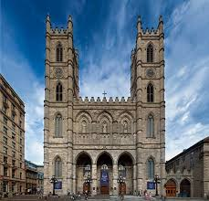
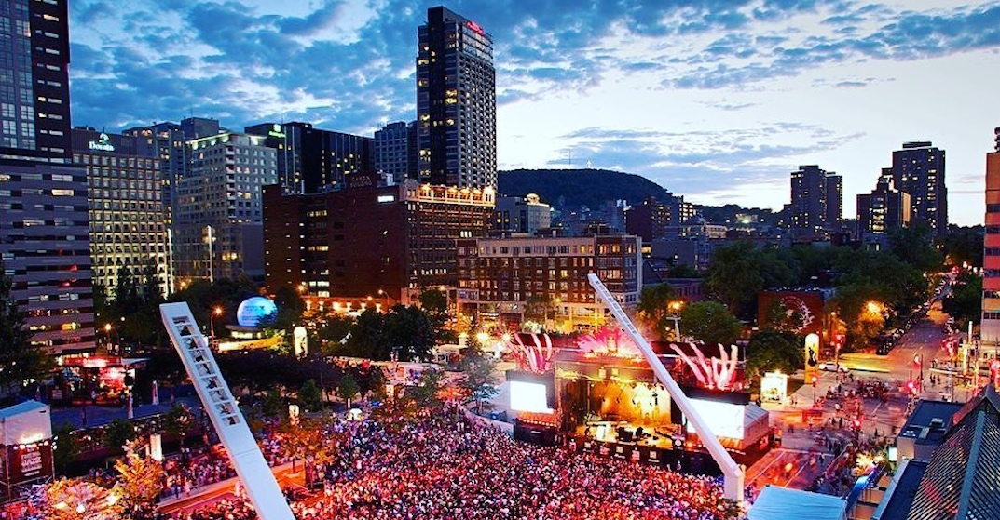
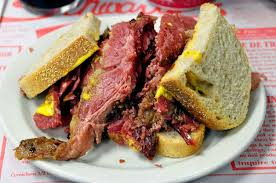
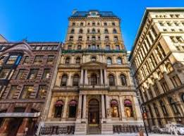
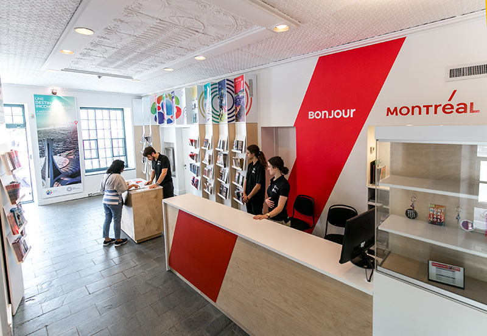

-

Notre-Dame
-

Jazz-Festival
-

Smoked-meat
-

Hotel
-

Information
Attractions
Notre-Dame
Notre-Dame Basilica (French: Basilique Notre-Dame de Montréal) is a basilica in the historic district of Old Montreal, in Montreal, Quebec, Canada. The church is located at 110 Notre-Dame Street West, at the corner of Saint Sulpice Street. It is located next to the Saint-Sulpice Seminary and faces the Place d'Armes square.

Activities
Jazz-Festival
The Festival International de Jazz de Montréal (English: Montreal International Jazz Festival) is an annual jazz festival held in Montreal, Quebec, Canada. The Montreal Jazz Fest holds the 2004 Guinness World Record as the world's largest jazz festival.Every year it features roughly 3,000 artists from 30-odd countries, more than 650 concerts (including 450 free outdoor performances), and welcomes over 2 million visitors (12.5% of whom are tourists) as well as 300 accredited journalists. The festival takes place at 20 different stages, which include free outdoor stages and indoor concert halls.

Food
Smoked-meat
Montreal-style bacon sandwich (French: Sandwichàla viandefumée) is a specialty of Montreal, Quebec, Canada. Certain kosher deli beef briskets are marinated with spices for more than a week, then smoked and steamed at high temperatures to make Montreal-style smoked meat (referred to as smoked meat in Montreal, French: viandefumée, smoked meat), It is often served with rye bread and topped with mustard sauce.

Hotel
Hotel Le St. James Montreal
This historic, beautifully restored former Merchants' Bank building, dating from 1870, is ideally situated in vibrant Old Montréal with easy access to shopping areas, restaurants and the financial centre.With impeccably detailed guest accommodations, each room and suite possesses its own character and personal charm.
Information
Tourist Service Center
The tourist information provided here covers the city of Montreal and the entire province of Quebec. Including tourist bus tickets and subway bus tickets, Montreal Pass, Montreal Museum Pass, tour guides, cruises and car rental information.

Tourist Service Center Address: 1255, rue Peel, bureau 100